jvm原理（47）G1垃圾收集器系列深入讲解
G1
Garage First Collector
吞吐量
- 吞吐量关注的是，在一个指定的时间内，最大化一个应用的工作量。
- 如下方式衡量一个系统吞吐量的好坏；
- 在一小时内同一个事物（或者任务、请求）完成的次数（tps）
- 数据库一小时可以完成多少次查询
- 对于关注吞吐量的系统，卡顿是可以接受的，因为这个系统关注长时间的大量任务的执行能力，，单词快速的响应并不值得考虑。
响应能力
- 响应能力指一个程序或者系统对请求是否能够及时响应，比如：
- 一个桌面UI能对快地响应一个事件
- 一个网站能够对快返回一个页面请求
- 数据库能够多块返回查询数据
- 对于这类对响应能力敏感的场景，长时间的停顿是无法接受的。
Garage First Collector
- g1收集器是一个面向服务端的垃圾收集器，，适用于多核处理器、大内存容量的服务器系统。
- 他满足短时间gc停顿的同时达到一个较高的吞吐量。
- jdk7以上版本适用。
G1收集器的设计目标
- 与应用线程同时工作，几乎不需要同时 stop the word（与cms类似）
- 整理剩余空间，不产生内存碎片（cms只能在full gc时，用stop the world整理内存碎片）
- GC的停顿更加可控；
- 不牺牲系统的吞吐量；
- gc不需要额外的内存空间（cms需要预留空间存储浮动垃圾）;
ps：举例，老年代50G，新生代30G，使用cms收集器收集垃圾的时候，他会在std的时候把老年代的50G和新生代的30G全部清理；
但是G1收集器不会这样，g1收集器可以设置std的时间，即要求g1的std的时间是多少秒，然后g1会对内存区域进行评估，在设定的时间内完成最大空间的释放，只回收部分区域，并不会收集所有的空间。
G1的设计规划是要替换掉cms
- G1在某些方面弥补了cms的不足，比如，cms使用的是mark-sweep算法，自然会产生内存碎片，然后g1基于copying算法，高效的整理剩余内存，而不需要管理内存碎片。
- 另外，g1提供更多手段，以达到对gc停顿时间的可控。
HotPot虚拟机主要构成
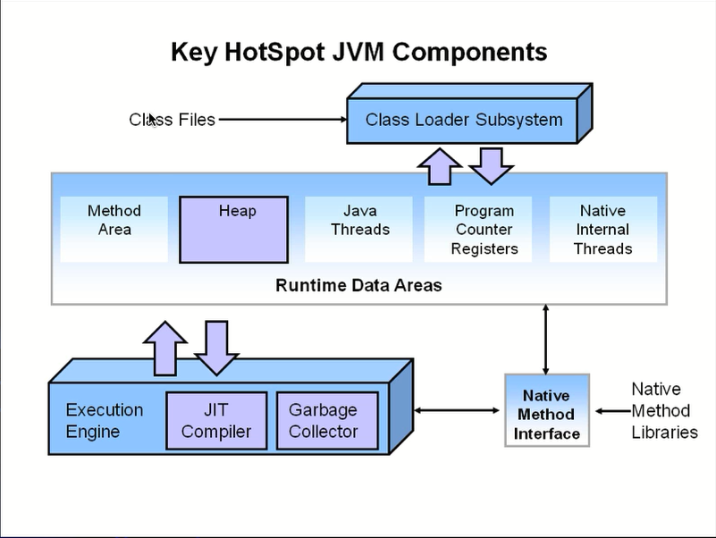
传统垃圾收集器堆结构
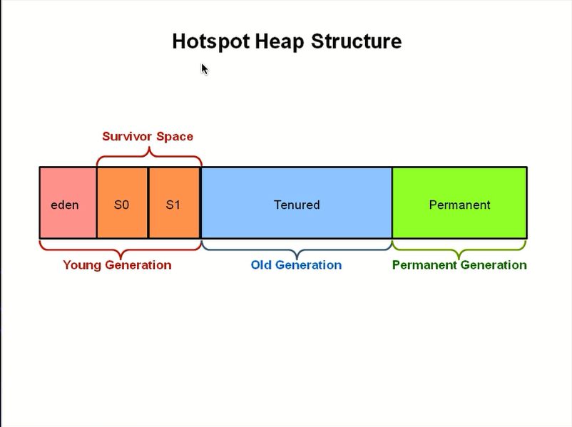
G1收集器堆结构
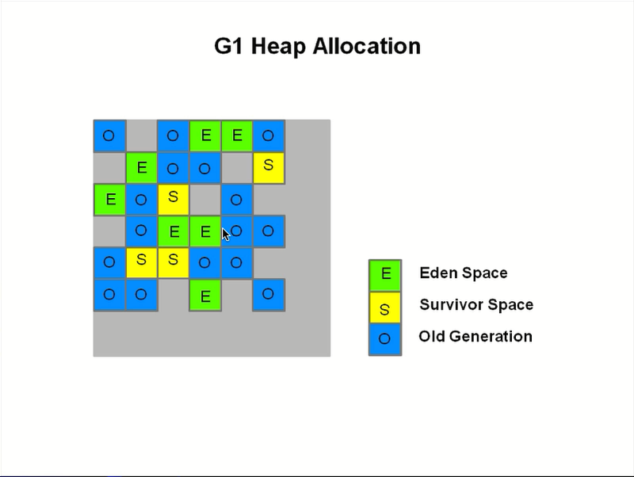
图中的每个区域，比如O区域，在随着时间的推移和内存的使用，可能会被定义为E或者S区域。
但是这三种类型是固定的，也是为了延续之前老的内存结构的概念名字。
- heap被划分为一个个的相等的不连续的内存区域（regions），每个region都有一个分代角色，eden，survivor、old。
- 对每个角色的数量并没有强制的限定，也就是说对于每种分代内存大小，可以动态变化。
- g1最大的特点就是高效的执行回收，优先去执行那些大量对象可回收的区域（region）
- G1使用了G1停顿可预测的模型，来满足用户设定的gc停顿时间，根据用户设定的目标时间，g1会自动化地选择那些region要清除，一次清除多少个region。
- g1从多个region中复制存活的对象，然后集中放入一个region中，同时整理，清除内存（copying收集算法）
比如对2个E进行回收，然后每个E都可能会有存活的对象，那么他们存活的对象就会移动到一个survivor区域，原有的2个E被置位空闲区域。4
G1 vs CMS
- 对比使用mark-sweep的CMS，G1使用的copying算法不会造成内存碎片；
- 对比Parallel Scavange（基于copying）、Parallel Old收集器（基于mark-compact-sweep），Parallel会对整个区域做整理导致 gc停顿时间会比较长，而g1只是特定地整理几个region。
- G1并不是一个实时的收集器，与parallel Scanvenge一样，对gc停顿时间的设置并不会绝对生效，只是g1有较高的几率保证不超过设定的gc停顿时间，与之前的gc收集器对比，g1会根据用户设定的gc停顿时间，智能评估那几个region需要被回收可以满足用户的设定。
G1重要概念
- 分区（region）：g1采用不同的策略来解决并行，串行和cms收集器的碎片、暂定时间不可空等问题—–g1将整个堆分成相同大小的分区（region）
- 每个分区都可能是年轻代也可能是老年代，但是在同一个时刻只能属于某个代。年轻代、幸存区、老年代这些概念还存在，成为逻辑上的概念，
这样方便复用之前分代框架的逻辑。 - 在物理上不需要连续，则带来额外的好处———有的分区内垃圾对象特别多，有的分区垃圾对象很少，g1会优先回收垃圾对象特别多的分区，
这样可以花费较少的时间来回收这些分区的垃圾，这也就是g1名字的由来，即首先收集垃圾最多的分区。 - 依然是在新生代满了的时候，对整个新生代进行回收———-整个新生代的对象，要么被回收，要么晋级，至于新生代也采取分区机制的原因，则是因为这样跟老年代的策略统一，方便调整整代的大小。
- g1还是一种带压缩的收集器，在回收老年代的分区时，是将存活的对象从一个分区拷贝到另一个分区，这个拷贝的过程就实现了局部的压缩。
- 收集集合（CSet）：一组可被回收的分区的集合，在Cset中存活的数据会被GC过程中被移动到另一个可用分区，CSet中的分区可以来自eden空间、survivor空间、或者老年代。
- 记忆集合（RSet）：RSet记录了其他Region中的对象引用本region中对象的关系，属于point-into结构（谁引用了我的对象）。RSet的价值在于使用垃圾收集器不需要扫描整个堆找到谁引用了当前分区中的对象，只需要扫描RSet即可。
- Region1和Region3中的对象引用了Region2中的对象，因此在Region2的Rset中记录了这两个引用。
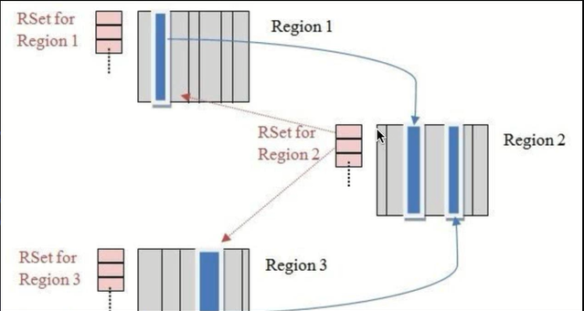 - G1 GC是在point-out的card table之上再加了一层结构来构成point-into Rset：每个region会记录下到底哪些别的region有指向自己的指针，而这些指针分别在哪些card的范围内。
- 这个Rset其实是一个hash table，key是别的region的起始地址，value是一个集合，里面元素是card table的index。举例来说，如果region A的Rset里有一项的key是regionB，value里有index为1234的card，它的意思就是regionB的一个card里有引用指向region A。所以对regionA来说，该Rset记录的是point-into的关系；而card table仍然记录了point-out的关系。
- Snapshot-At-The-Begining（SATB）：
SATB是G1 GC在并发标记阶段使用的增量式的标记算法（存在浮动垃圾）。 - 并发标记是并发多线程的，但并发线程在同一时刻只扫描一个分区。
G1相对于CMS的优势
- G1在压缩空间方面有优势
- G1通过将内存空间分片成区域（Region）的方式避免内存碎片问题
- Eden、Survivor、Old区不在固定，在内存使用效率上来说更灵活。
- G1可以通过设置停顿时间（Pause Time）来控制垃圾收集时间，避免应用雪崩现象。
- G1在回收内存后会马上同时做合并空内存的工作，而CCMS默认是在STW的时候做。
- G1会在Young GC中使用，而CMS只能在O区使用。
G1的适合场景
- 服务端多核CPU，kvm内存占用较大的应用
- 应用子啊运行过程中会产生大量内存碎片、需要经常压缩空间
- 想要更可控、可预测的GC停顿周期：防止高并发下应用的雪崩现象。
G1 GC模式
G1提供了两种模式，Young GC和Mixed GC两种都是完全stop the world的
Young GC：选定所有年轻代里 的Region。通过控制年轻代的Region个数，即年轻代内存大小，来控制Young GC的时间开销。
Mixed GC：选定所有年轻代里的Region，外加根据Global concurent marking统计得出收集收益高的若干老年代Region。在用户指的开销
目标范围内尽可能选择收益高的老年代Region。Mixed GC不是Full GC，它只能回收部分老年代的region，如果Mixed GC实在无法跟上程序分配内存的速度，导致老年代填满无法继续进行mixed GC，就会使用serial old GC（full Gc）来收集整个GC heap所以本质上，G1是不提供full gc的。
gloabal concurrent marking
gloabal concurrent marking的执行过程类似于cms，但是不同的是，在G1 GC中，它主要是为Mixed GC提供标记服务的，并不是一次GC的一个必要环节
gloabal concurrent marking的执行过程分为四个步骤。
初始标记（initial mark ,stw）：它标记了从GC root开始直接可达的对象
开发标记（Concurrent Marking）：这个阶段从GC root开始对heap中的对象进行标记，标记线程与应用程序线程并发执行，并且收集各个Region的存活对象信息。
重新标记（Remark ，Stw）：标记那些在并发标记阶段发生变化的对象，将被回收。
清理（cleanUp）：清除空Region（没有存活对象的），加入到free list。
第一阶段initial mark是共用了 Young GC的暂停，只是因为他们可以复用root scan操作，所以可以说gloabal concurrent marking是伴随
young Gc 而发生的。第四阶段Cleanup只是回收了没有存活对象的Region，所以它并不需要STW。
G1在运行过程中主要模式
- YGC（不同于CMS）
- 并发阶段 (为混合阶段提供数据支持，对区域进行标记)
- 混合阶段 （首先进行YGC，然后根据并发阶段标记出来的区域进行最优化回收）
- Full GC（一般是G1出现问题时发生，G1出现问题时发生）
- G1 YGC在Eden充满时触发，在回收后所有之前属于Eden的区块全部变成空白，即不属于任何一个分区（Eden、Survivor、old）
Mixed GC
什么时候触发Mixed GC?
由一些参数控制，另外也控制着那些老年代Region会被选入CSet（收集集合）
G1HeapWastePercent：在global concurrent marking结束之后，我们可以知道old gen regions中有多少空间要被回收，在每次YGC之后和再次发生Mixed GC之前，会检查垃圾占比是否达到此参数，只要达到了，下次才会发生Mixed GC
G1MixedGCLiveThresholdPercent：old generation region中的存活对象的占比，只有在此参数之下，才会被选入Cset（活着的对象比较少，就是垃圾比较多，才会纳入收集集合）。
G1MixedGCCountTarget：一次global concurrent marking之后，最多执行mixed gc的次数。
G1OldCSetRegionThresoldPercent：一次mixed Gc中能被选入CSet的最多old generation region数量。
G1 GC其他的参数
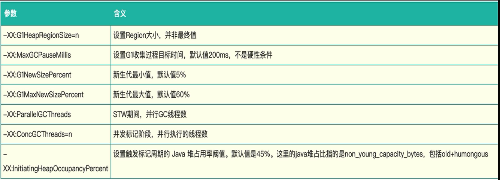
G1 Oracle官方doc
https://www.oracle.com/technetwork/tutorials/tutorials-1876574.html
G1收集概览
- G1算法将 堆划分为若干个区域（region）。它仍然是属于分代收集器，不过，这些区域的一部分包含新生代，新生代的垃圾收集器依然采用暂停所有应用线程的方式，将存活对象拷贝到老年代或者Survivor空间。老年代也分成很多区域，G1收集器通过将对象从一个区域复制到另外一个区域，完成清理工作。这就意味着，在正常的处理过程中，G1完成了堆压缩（至少是部分堆的压缩），这样也就不会有cms内存碎片的问题的存在了。
Humongous区域
- 在G1中，还有一种特殊的区域，叫 Humongous区域。如果一个对象占用的空间达到或是超过了分区容量50%以上，G1收集器就会认为是一个巨型对象。这些巨型对象，默认直接会被分配在老年代，但是如果它是一个短暂存在的巨型对象，就会垃圾收集器造成负面影响。为了解决这个问题，G1划分了一个 Humongous区，它用来专门存放巨型对象，如果一个H区装不下一个巨型对象，那么G1会寻找连续的H区来存储。为了能找打连续的H区，有时候不得不启动Full GC
G1 Young GC
Young GC 主要是对Eden区进行GC，，它在Eden空间耗尽时会被触发。这种情况下，Eden空间的数据移动到Survivor空间中，如果Survivor空间不够，Eden空间的部分数据会直接晋升到老年代空间。survivor区的数据移动到新的Survivor区中，也有部分数据晋升到老年代空间中。最终Eden空间的数据为空，GC完成工作，应用线程继续执行（ Young GC 会STW）。
如果仅仅GC回收新生代对象，我们如何找到所有的根对象呢？老年代的所有对象都是根么？那这样扫描下来会耗费大量的时间。于是，G1引进了Rset的概念。它的全称是Remembered SET，作用是跟踪指向某个heap区内的对象引用。
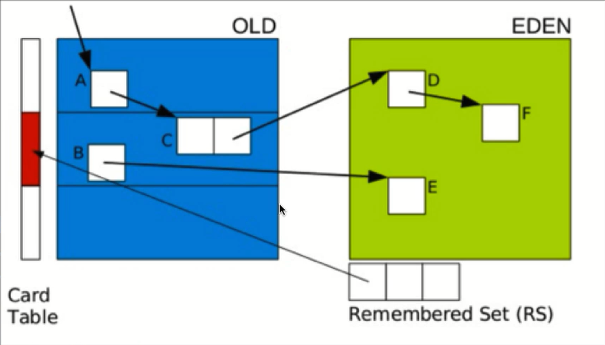在CMS中，也有Rset的概念，在老年代中有一块区域用来记录指向新生代的引用。这是一种point-out，在进行Young GC时，扫描根时，仅仅需要扫描这一块区域，，而不需要扫描整个老年代。
但是G1中，并没有使用point-out，这是由于一个分区太小，分区数量太多，如果是用point-out的话，会造成大量的扫描浪费，有些根本不需要GC的分区引用也扫描了。
于是G1中使用point-in来解决，point-in的意思是那些分区引用了当前分区中的对象。这样，仅仅将这些对象当做根来扫描就避免了无效的扫描。
由于新生代有多个，那么我们需要在新生代之间记录引用吗？这是不必要的，原因在于每次GC时，所有新生代都会被扫描，所以只需要记录老年代到新生代之间的引用即可。
需要注意的是，如果引用的对象很多，赋值器需要对每个引用处理，赋值器开销很很大，为了解决赋值器开销这个问题，在G1中又引入另外一个概念，卡表（Card Table）。一个Card Table将一个分区在逻辑上划分为固定大小的连续区域，每个区域称为卡。卡通通常较小，介于128到512字节之间。card table通常为字节数组，由card的索引（即，数组下标）来标示每个分区的空间地址
默认情况下，每个卡都未被引用，当一个地址空间被引用时，这个地址空间对应的数组索引的值被标记为0，即标记为脏被引用，此外RSet也将这个数组下标记录下来，一般情况下，这个RSet其实是一个Hash Table，Key是别的Region的起始地址，Value是一个集合，里面的元素是Card Tabella的Index。
G1 Young GC
阶段1：根扫描
- 静态和本地对象被扫描
阶段2：更新RS
- 处理dirty card队列更新RS
阶段3：处理RS
- 检测从年轻代指向老年代的对象
阶段4：对象拷贝
- 拷贝存活的对象到survivor/old区域
阶段5：处理引用队列
- 软引用，弱引用，虚引用处理
再谈Mised GC
- mixed GC不仅进行正常的新生代垃圾收集，同时也回收部分后台扫描线程标记的老年代分区。
- 它的GC步骤分为2步：
- 全局的并发标记(gloabal concurrrent marking)
- 拷贝存活对象(evacuation)
- 在G1中，gloabal concurrrent marking主要的是为mised gc提供标记服务，并不是一次过程gc过程的一个必要环节，blobal concurrent marking的执行过程分为四个步骤。
三色标记算法
- 提到并发标记算法，我们不得不了解并发标记的三色标记算法。它是描述追踪式回收的一种有效的方法，利用它可以推演回收器的正确性。
三色标记算法
- 我们将对象分成三种类型：
- 黑色：根对象，或者该对象与它的子对象都被扫描过（对象被标记了，且它的所有filed也被标记完了）
- 灰色：对象本身被扫描，但还没有扫描完该对象中的子对象（它的field还没有被标记或标记完）
- 白色：未被扫描对象，扫描完成所有对象之后，最终为白色的为不可达对象，即垃圾对象（对象没有被标记到）
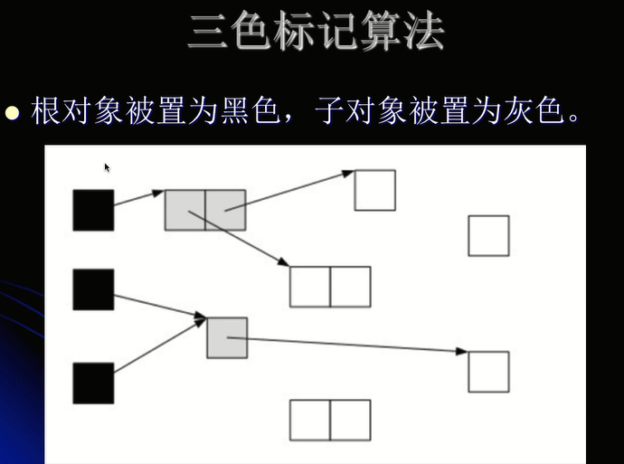
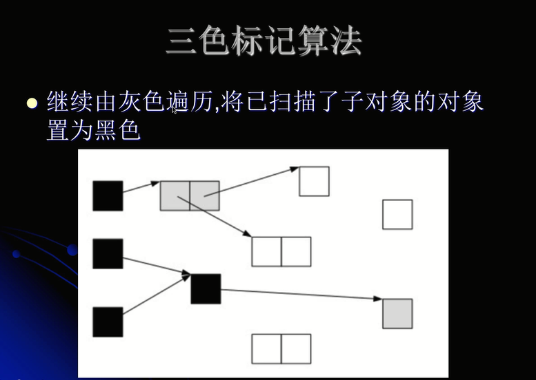
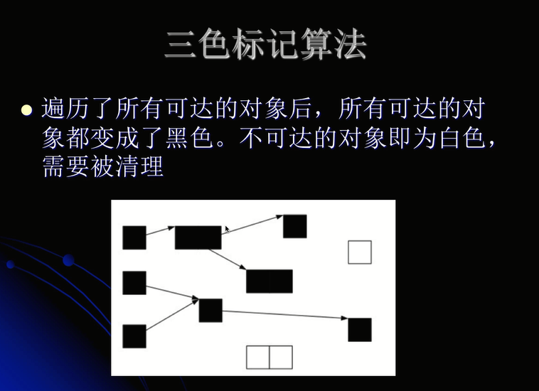
但是如果在标记过程中，应用程序也运行，那么对象的指针就有可能改变。这样的话，我们就会遇到一个问题：对象丢失问题。
- 当垃圾收集器扫描到下面情况时
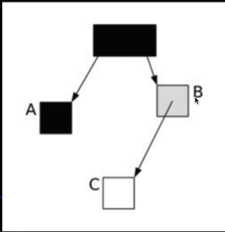 - 这时候应用程序执行了以下操作：
- A.c = C
- B.c = null
- 这样，对象的状态图变成如下情形：
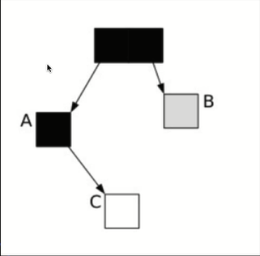
这时候垃圾收集器再标记扫描的时候就会变成下图这样
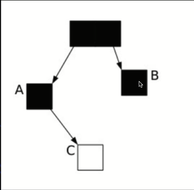
这个时候A和C是矛盾的，A是黑色的，意味着他自己和他下面的也扫描完了，这样C会被认为是垃圾，但是A指向了C，如果回收了C是严重的不对。 - 很显然，此时C是白色，被认为是垃圾需要清理掉，显然这是不合理的，出现了漏标。
SATB
在G1中，使用的是STAB(Snapsshot-At-The-Beginning)的方式，删除的时候记录所有的对象
它有3个步骤
- 在开始标记的时候生成一个快照图，标记存活对象
- 在并发标记的时候所有被改变的对象入队(在write barrier里把所有旧的引用所指向的对象都变成非白色的)
- 可能存在浮动垃圾，将在下次被收集
按照这个步骤，上面的三张图（ABC的关系图）C会标记为灰色，这样就避免了C成为垃圾的命运，因为只有白色的才会被回收。
G1混合式回收
- G1到现在可以知道哪些老的分区可回收垃圾最多，当全局并发标记完成后，在某个时刻，就开始了Mixed GC。这些垃圾回收被称作“混合式”是因为他们不仅仅进行正常的新生代垃圾回收，同时也回收部分后台扫描线程标记的分区
- 混合式GC也是采用的复制清理策略，当GC完成后，会重新释放空间。
G1的分代算法
- 为老年代设置分区的目的是老年代里有的分区垃圾多，有的分区垃圾少，这样在回收的时候可以专注于收集垃圾多的分区，这也是G1名称的由来。
- 不过这个算法并不适合新生代垃圾收集，因为新生代的垃圾收集算法是复制算法，但是新生代也使用了分区机制主要是因为便于代大小的调整
SATB详解
SATB是维持并发GC的一种手段，G1并发的基础就是SATB。SATB可以理解成在GC开始之前对堆内内存里的对象做一次快照，此时活的对象就认为是活的，从而形成一个对象图。
在GC收集的时候，新生代的对象也认为是活的对象，除此之外其他不可达的对象都认为是垃圾对象。
如何找到在GC过程中分配的对象呢？每个region记录着两个top-at-mark-start(TAMS)指针，分别为preTAMS和nextTAMS。在TAMS以上的对象就是新分配的，因而被视为隐式marked。
通过这种方式我们就找到了在GC过程中新分配的对象，并把这些对象认为是活的对象。
解决了对象在GC过程中分配的问题，那么在GC过程中引发变化的问题怎么解决呢？
G1 给出的解决办法是通过Write Barrier。Write Barrier就是对引用字段进行赋值做了额外处理。通过Write Barrier就可以了解到那些引用对象发生了什么样的变化（简单的理解就是在对象赋值的时候将赋值的对象变为非白色的）。
mark的过程就是遍历heap标记live object的过程，采用的是三色标记算法，这三种颜色为write（表示还未访问到）、gray（访问到但是它用到的引用还没有完全扫描）、black（访问到而且其用到的引用已经完全扫描完）
整个三色标记算法就是从GC roots出发遍历heap，针对可达对象先标记whrite 为gray，然后再标记gray为black：遍历完成之后所有可达对象都是black的，所有white都是可以被回收的。
SATB仅仅对于在marking开始阶段进行snapshot（marked all reachable at mark start），但是concurrent的时候并发修改可能造成对象漏标记。
对black新引用了一个white对象，然后又从gray对象中删除了对该white对象的引用，这样会造成了该white对象漏标记
对black新引用了一个white对象，然后从gray对象删除了一个引用该white对象的white对象，这样也造成了该white对象漏标记
对black新引用了一个刚new出来的white对象，没有其他gray对象引用该white对象，这样也会造成了该white对象漏标记。
对于三色算法在concurrent的时候可能产生的漏标记问题，SATB的marking阶段中，对于从gray对象移除的目标引用对象标记为gray，对于black引用的新产生的对象标记为black；由于是在开始的时候进行snapshot，因而可能存在Floating Garbage
漏标与误标
- 误标没什么关系，顶多造成浮动垃圾，在下次gc还是可以回收的，但是漏标的后果是致命的，把本应该存活的对象给回收了，从而影响的程序的正确性。
漏标情况只会发生在白色对象中，且满足以下任意一个条件
- 并发标记时，应用线程给一个黑色对象的引用类型字段赋值了该白色对象（黑色对象意味着自己和孩子都被扫描了，而黑色下边挂白色的，白色会被认为是垃圾）
- 并发标记时，应用线程删除所有灰色对象到该白色对象的引用（灰色的意味着孩子还没有被扫描，此时删除孩子的引用）。
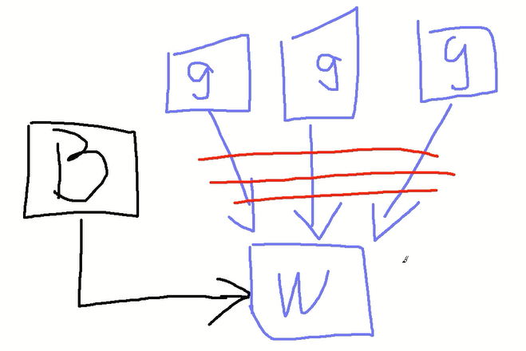
三个灰色对象都指向一个白色对象，此时删除三个灰色对象到白色对象的引用，此时我们可能认为W会被当做垃圾回收，但是存在一种情况是一个黑色对象也引用了白色对象，这样 就回到了第一种情况。
对于第一种情况，利用post-write- barrier，记录所有新增得引用关系，然后根据这些引用关系为根重新扫描一遍
对于第二种情况，利用pre-write barrier，将所有即将删除的引用关系的旧引用记录下来，最后以这些引用为根重新扫描一遍。
停顿预测模型
- G1收集器突出表现出来的一点是通过一个停顿预测模型根据用户配置的停顿时间来选择CSet的大小，从而达到用户期待的应用程序停顿时间。
- 通过-XX：MaxGCPauseMillis参数来设置。这一点有点类似于ParallelScanvenge收集器。关于停顿时间的设置并不是越短越好。
- 设置的时间越短意味着 每次收集的CSet越小，导致垃圾逐步积累变多，最终不得不退化成Serial GC；停顿时间设置的过长，那么会导致每次都会产生长时间的停顿，影响了程序对外的响应时间。
G1的收集模式
Young GC：收集年轻代里的Region+
Mixed gc :年轻代的所有Region + 全局并发标记阶段选出的收益高的Regionold（old Region）
无无论是Young GC还是Mixed GC都只是并发拷贝的阶段。
分代G1的模式下选择CSet有两种子模式，分别对应Young GC和Mixed GC
Young GC：CSet就是所有年轻代里面的Region
Mixed GC：CSet是所有年轻代里的Region加上全局并发标记阶段标记出来的收益高的Region
G1的运行过程是这样的：会在Young GC和Mixed GC之间不断地切换运行，同时定期地做全局并发标记，在实在赶不上对象创建速度的情况下使用Full GC（Serial GC）
初始标记是在YoungGC上执行的，在进行全局并发标记的时候不会做Mixed GC，在做Mixed GC的时候也不会启动初始标记阶段。
当Mixed GC赶不上对象创建产生的速度的时候就会退化成Full GC，这一点需要重点调优的地方。
G1最佳实践
不断调优暂停实践指标
- 通过-XX：MaxGCPauseMillis=x可以设置启动应用程序暂停的时间，G1在运行的时候根据这个参数选择CSet来满足响应时间的设置。一般情况下这个值设置到100ms或者200ms都是可以的（不同情况会不一样），但如果设置成50ms就不太合理。暂停时间设置的太短，就会导致出现G1跟不上垃圾产生的速度，最终退化成full GC，所以对这个参数的调优是一个持续的过程，逐步调整到最佳状态。
不要设置新生代和老年代的大小
- G1收集器再运行的时候会调整新生代和老年代的大小，通过改变代的大小来调整对象晋升的速度以及晋升年龄，从而达到我们为收集器设置的暂停时间目标
- 设置了新生代大小相当于放弃了G1为我们做的自动调优，我们需要做的只是设置整个堆内存的大小，剩下的交给G1自己去分配各个代的大小即可。
关注Evacuation Failure
- Evacuation Failure 类似于CMS里面的晋升失败，堆空间的垃圾太多导致无法完成Region之间的拷贝，于是不得不退化成Ful GC来做一次全局范围内的垃圾收集。
G1实例讲解
编写程序：
1
2
3
4
5
6
7
8
9
10
11
12
13
14
15
16
17
18
19
20/**
-verbose:gc
-Xms10m
-Xmx10m
-XX:+UseG1GC
-XX:+PrintGCDetails
-XX:+PrintGCDateStamps
-XX:MaxGCPauseMillis=200m
*/
public class MyTest {
public static void main(String[] args) {
int size = 1024 * 1024;
byte[] myAlloc1 = new byte[size];
byte[] myAlloc2 = new byte[size];
byte[] myAlloc3 = new byte[size];
byte[] myAlloc4 = new byte[size];
System.out.println("hello world");
}
}
运行结果：
1
2
3
4
5
6
7
8
9
10
11
12
13
14
15
16
17
18
19
20
21
22
23
24
25
26
27
28
29
30
31
32
33
34
35
36
37
38
39
40
41
42
43
44
45
46
47
48
49
50
51
52
53
54
55
56
57
58
59
60
61
62
63
64
65
66
67
68
69
70
71
72
73
74
75
762019-07-21T09:56:58.080+0800: [GC pause (G1 Humongous Allocation) (young) (initial-mark), 0.0022068 secs]
【解释】：
Humongous大对象空间的申请，因为我们创建了一个1M大小的字节数组。
同时开始一次young GC，young GC会有一次初始标记。
[Parallel Time: 1.4 ms, GC Workers: 8]
【解释】：
并发时间是1.4 ms，一共有8个线程执行
[GC Worker Start (ms): Min: 293.7, Avg: 293.8, Max: 294.1, Diff: 0.4]
[Ext Root Scanning (ms): Min: 0.2, Avg: 0.7, Max: 1.3, Diff: 1.1, Sum: 5.9]
[Update RS (ms): Min: 0.0, Avg: 0.0, Max: 0.0, Diff: 0.0, Sum: 0.0]
[Processed Buffers: Min: 0, Avg: 0.0, Max: 0, Diff: 0, Sum: 0]
[Scan RS (ms): Min: 0.0, Avg: 0.0, Max: 0.0, Diff: 0.0, Sum: 0.0]
[Code Root Scanning (ms): Min: 0.0, Avg: 0.0, Max: 0.0, Diff: 0.0, Sum: 0.0]
[Object Copy (ms): Min: 0.0, Avg: 0.3, Max: 0.7, Diff: 0.7, Sum: 2.7]
[Termination (ms): Min: 0.0, Avg: 0.0, Max: 0.1, Diff: 0.1, Sum: 0.4]
[Termination Attempts: Min: 1, Avg: 4.5, Max: 9, Diff: 8, Sum: 36]
【解释】：
以上五个步骤对应之前的young GC理论;
- 阶段1：根扫描
- 静态和本地对象被扫描
- 阶段2：更新RS
- 处理dirty card队列更新RS
- 阶段3：处理RS
- 检测从年轻代指向老年代的对象
- 阶段4：对象拷贝
- 拷贝存活的对象到survivor/old区域
- 阶段5：处理引用队列
- 软引用，弱引用，虚引用处理
[GC Worker Other (ms): Min: 0.0, Avg: 0.1, Max: 0.1, Diff: 0.1, Sum: 0.5]
[GC Worker Total (ms): Min: 1.0, Avg: 1.2, Max: 1.3, Diff: 0.4, Sum: 9.5]
[GC Worker End (ms): Min: 295.0, Avg: 295.0, Max: 295.0, Diff: 0.0]
【解释】：
GC线程在其他任务花费的时间，一些统计信息。
[Code Root Fixup: 0.0 ms]
[Code Root Purge: 0.0 ms]
[Clear CT: 0.2 ms]
【解释】：
CT：card table
[Other: 0.5 ms]
[Choose CSet: 0.0 ms]
【解释】：回收集合，选择那些回收集合
[Ref Proc: 0.2 ms]
【解释】：软引用，弱引用等花费的时间
[Ref Enq: 0.0 ms]
【解释】：引用的信息进入到队列当中
[Redirty Cards: 0.2 ms]
[Humongous Register: 0.0 ms]
[Humongous Reclaim: 0.0 ms]
[Free CSet: 0.0 ms]
【解释】：对回收集合进行释放，回收
[Eden: 3072.0K(4096.0K)->0.0B(2048.0K) Survivors: 0.0B->1024.0K Heap: 4291.8K(10.0M)->2900.1K(10.0M)]
【解释】：执行完young gc之后整个堆的一个状态；
Eden空间有原来的3072.0K变成了0，Survivors有原来的0变成了1024K，证明里边多了一个对象的大小，整个对象来自于eden，
Heap是堆的大小是10M，我们jvm参数指定的，释放完之后现在的大小是2900.1K
[Times: user=0.00 sys=0.00, real=0.00 secs]
2019-07-21T09:56:58.083+0800: [GC concurrent-root-region-scan-start]
2019-07-21T09:56:58.085+0800: [GC concurrent-root-region-scan-end, 0.0016524 secs]
2019-07-21T09:56:58.085+0800: [GC concurrent-mark-start]
【解释】：
并发的一些处理，root scan的开始和结束
并发标记的开始
hello world
2019-07-21T09:56:58.085+0800: [GC concurrent-mark-end, 0.0000945 secs]
2019-07-21T09:56:58.085+0800: [GC remark 2019-07-21T09:56:58.085+0800: [Finalize Marking, 0.0002648 secs] 2019-07-21T09:56:58.085+0800: [GC ref-proc, 0.0004676 secs] 2019-07-21T09:56:58.086+0800: [Unloading, 0.0004559 secs], 0.0015282 secs]
[Times: user=0.00 sys=0.00, real=0.00 secs]
2019-07-21T09:56:58.087+0800: [GC cleanup 5009K->5009K(10M), 0.0011514 secs]
[Times: user=0.00 sys=0.00, real=0.00 secs]
Heap
garbage-first heap total 10240K, used 4948K [0x00000000ff600000, 0x00000000ff700050, 0x0000000100000000)
region size 1024K, 2 young (2048K), 1 survivors (1024K)
Metaspace used 3491K, capacity 4498K, committed 4864K, reserved 1056768K
class space used 387K, capacity 390K, committed 512K, reserved 1048576K
【解释】：
G1收集器，堆大小10240K，已经使用4948K，region的大小是1024K，这个很重要，同时也说明了为什么会创建Humongous，因为1024K超出了region的一半的大小，2个young，有2个region是young，一个survivors是1024K，其他就是old区域。
Metaspace是元空间的一些情况。